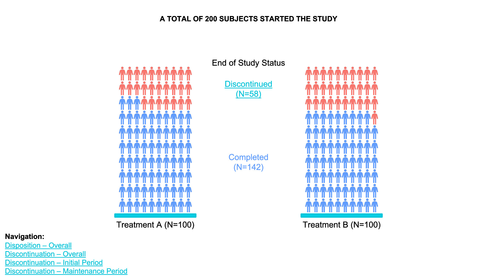

Flow Chart
Introduction
Study flow charts in clinical trials are visual representations of the different stages and processes participants undergo from the beginning to the end of a clinical study. These charts provide a structured, step-by-step outline of the trial’s flow, making it easier to understand participant progress and the timing of various assessments and interventions. Flow charts are particularly useful for stakeholders like clinical researchers, sponsors, regulatory agencies, and ethical review boards, as they provide a clear, at-a-glance summary of the study’s design.
Key Components of Study Flow Charts
- Enrollment Phase
- Screening: The initial step where potential participants are assessed against the study’s eligibility criteria. This stage identifies who is eligible or ineligible for the study.
- Randomization (if applicable): Eligible participants are randomly assigned to either the treatment or control group.
- Intervention Phase
- Treatment Groups: Participants may be divided into various arms, such as a treatment arm (receiving the drug/intervention) and a control arm (receiving a placebo or standard care).
- Assessments: Flow charts outline when assessments (e.g., baseline, follow-up visits, and final evaluations) take place, detailing each visit or milestone.
- Follow-up Phase
- Monitoring and Evaluations: Key follow-up steps, including adverse event monitoring, efficacy assessments, and quality-of-life measures, are tracked over time.
- End of Study Visit: The final visit marks the formal conclusion of each participant’s involvement.
- Outcome and Data Analysis Phase
- Primary and Secondary Endpoints: Flow charts may indicate the points at which primary and secondary outcomes are measured to evaluate the study’s success.
- Completion and Dropouts: The flow chart shows completion rates, dropouts, and reasons for withdrawal.
Benefits of Study Flow Charts
- Clarity and Transparency: They simplify complex processes, making it easier to communicate trial protocols.
- Consistency: By mapping the study’s course, they help ensure adherence to protocol and proper data collection at each stage.
- Regulatory Compliance: Flow charts provide a visual compliance document for regulatory agencies to ensure all ethical and procedural standards are met.
- Efficiency in Data Collection: They guide study personnel in tracking where each participant is in the trial, minimizing errors.
Example


CONSORT Diagramm in SAS
Automate in R
Gmisc and grid Package
textGrobfor Text: I’ve usedtextGrobfor the text inside each box.rectGrobfor Boxes: Rectangles (rectGrob) are drawn around eachtextGrobto create visible boxes.grid.segmentsfor Connections: Connections are made withgrid.segments, adding arrows to match the flow.
library(grid)
library(Gmisc)
library(gridExtra)
grid.newpage()
# Define parameters
leftx <- 0.25
midx <- 0.5
rightx <- 0.75
width <- 0.4
gp <- gpar(fill = "lightgrey", col = "black", fontsize = 10, fontfamily = "sans")
# Create boxes with labels
total <- textGrob("Total\nN = NNN", x = midx, y = 0.9, gp = gp)
rando <- textGrob("Randomized\nN = NNN", x = midx, y = 0.75, gp = gp)
inel <- textGrob("Ineligible\nN = NNN", x = rightx, y = 0.825, gp = gp)
# Boxes for Group Allocation
g1 <- textGrob("Allocated to Group 1\nN = NNN", x = leftx, y = 0.5, gp = gp)
g2 <- textGrob("Allocated to Group 2\nN = NNN", x = rightx, y = 0.5, gp = gp)
# Boxes for Follow-up
g11 <- textGrob("Followed up\nN = NNN", x = leftx, y = 0.3, gp = gp)
g21 <- textGrob("Followed up\nN = NNN", x = rightx, y = 0.3, gp = gp)
# Boxes for Completion
g12 <- textGrob("Completed\nN = NNN", x = leftx, y = 0.1, gp = gp)
g22 <- textGrob("Completed\nN = NNN", x = rightx, y = 0.1, gp = gp)
# Draw rectangles around textGrob elements to resemble boxes
grid.draw(rectGrob(x = midx, y = 0.9, width = width, height = 0.1, gp = gp))
grid.draw(total)
grid.draw(rectGrob(x = midx, y = 0.75, width = width, height = 0.1, gp = gp))
grid.draw(rando)
grid.draw(rectGrob(x = rightx, y = 0.825, width = 0.25, height = 0.05, gp = gp))
grid.draw(inel)
grid.draw(rectGrob(x = leftx, y = 0.5, width = width, height = 0.1, gp = gp))
grid.draw(g1)
grid.draw(rectGrob(x = rightx, y = 0.5, width = width, height = 0.1, gp = gp))
grid.draw(g2)
grid.draw(rectGrob(x = leftx, y = 0.3, width = width, height = 0.1, gp = gp))
grid.draw(g11)
grid.draw(rectGrob(x = rightx, y = 0.3, width = width, height = 0.1, gp = gp))
grid.draw(g21)
grid.draw(rectGrob(x = leftx, y = 0.1, width = width, height = 0.1, gp = gp))
grid.draw(g12)
grid.draw(rectGrob(x = rightx, y = 0.1, width = width, height = 0.1, gp = gp))
grid.draw(g22)
# Draw connections
grid.segments(x0 = midx, y0 = 0.85, x1 = midx, y1 = 0.8, arrow = arrow(type = "closed", length = unit(0.15, "inches")))
grid.segments(x0 = midx, y0 = 0.85, x1 = rightx, y1 = 0.825, arrow = arrow(type = "closed", length = unit(0.15, "inches")))
grid.segments(x0 = midx, y0 = 0.7, x1 = leftx, y1 = 0.55, arrow = arrow(type = "closed", length = unit(0.15, "inches")))
grid.segments(x0 = midx, y0 = 0.7, x1 = rightx, y1 = 0.55, arrow = arrow(type = "closed", length = unit(0.15, "inches")))
grid.segments(x0 = leftx, y0 = 0.45, x1 = leftx, y1 = 0.35, arrow = arrow(type = "closed", length = unit(0.15, "inches")))
grid.segments(x0 = rightx, y0 = 0.45, x1 = rightx, y1 = 0.35, arrow = arrow(type = "closed", length = unit(0.15, "inches")))
grid.segments(x0 = leftx, y0 = 0.25, x1 = leftx, y1 = 0.15, arrow = arrow(type = "closed", length = unit(0.15, "inches")))
grid.segments(x0 = rightx, y0 = 0.25, x1 = rightx, y1 = 0.15, arrow = arrow(type = "closed", length = unit(0.15, "inches")))
consort package
Consort diagram produced with consort_plot
When the number of subjects in the final analysis is less than the number of subjects initially entering the study, it is important to detail the observation filtering process. This is often done with a consort diagram, and fortunately R has the consort package by Alim Dayim for drawing data-driven diagrams. To demonstrate its use let’s simulate a two-treatment randomized clinical trial in which 1000 subjects were screened for participation.
| id | age | pain | hxmed | consent | randomized | tx | futime | y |
|---|---|---|---|---|---|---|---|---|
| 1 | 51 | 2 | 1 | NA | NA | NA | NA | NA |
| 2 | 63 | 2 | 0 | 1 | 1 | A | 3.0000 | 0 |
| 3 | 47 | 1 | 0 | 1 | 1 | A | 3.0000 | NA |
| 4 | 84 | 5 | 0 | 1 | 0 | NA | NA | NA |
| 5 | 65 | 3 | 0 | 1 | 1 | B | 3.0000 | 1 |
| 6 | 48 | 4 | 0 | 1 | 1 | A | 3.0000 | 0 |
| 7 | 67 | 3 | 0 | 1 | 1 | B | 2.0566 | NA |
| 8 | 71 | 0 | 0 | NA | NA | NA | NA | NA |
| 9 | 69 | 5 | 0 | 1 | 1 | B | 1.2815 | NA |
| 10 | 55 | 2 | 0 | 1 | 1 | B | 1.2388 | NA |
| 11 | 83 | 4 | 0 | 1 | 1 | A | 3.0000 | 1 |
| 12 | 66 | 5 | 0 | 1 | 1 | A | 3.0000 | 0 |
| 13 | 51 | 1 | 0 | 1 | 1 | B | 3.0000 | 0 |
| 14 | 27 | 2 | 0 | NA | NA | NA | NA | NA |
| 15 | 77 | 2 | 0 | 1 | 1 | A | 3.0000 | 0 |
Now show the flow of qualifications and exclusions in a consort diagram. consort_plot wants multiple reasons for exclusions to be prioritized in a hierarchy, and NA to be used to denote “no exclusion”. Use the Hmisc function seqFreq that creates a factor variable whose first level is the most common exclusion, second level is the most common exclusion after excluding subjects based on the first exclusion, and so on. seqFreq also returns an attribute obs.per.numcond with a frequency tabulation of the number of observations having a given number of conditions.
Consort diagram using component functions
consort provides another way to build the diagram that may be more flexible and intuitive after we define some helper functions. The built-in R pipe operator |> is used.
Individual subjects
 


waffle chart
- Data Definition:
data_treatment_Aanddata_treatment_Bdefine the counts for “Discontinued” and “Completed” for each treatment group. - Color Palette: The colors for “Discontinued” and
“Completed” are set with
colors. - Waffle Plots:
waffleis used to create individual waffle charts for Treatment A and Treatment B. - Combining Plots:
plot_gridfrom thecowplotpackage is used to arrange the waffle plots side-by-side and add titles for the overall plot.
Reference
SIG (2024, May 8). VIS-SIG Blog: Wonderful Wednesdays May 2024. Retrieved from https://graphicsprinciples.github.io/posts/2024-09-12-wonderful-wednesdays-may-2024/
Harrell, F. E., Jr. (2024). R Workflow for Reproducible Data Analysis and Reporting. Department of Biostatistics, School of Medicine, Vanderbilt University. Published September 26, 2024. https://hbiostat.org/rflow/